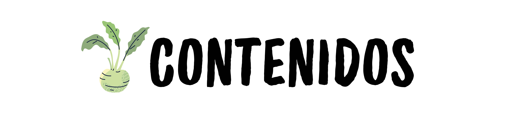

El estudio del medio ambiente convoca diferentes disciplinas que poseen objetos propios de conocimiento, y es precisamente en el Nivel Inicial donde su objetivo es estimular en los alumnos a complejizar, profundizar y organizar sus conocimientos hacia el entorno. Conocer el ambiente implica conocer la diversidad de seres y elementos que lo componen, respetando las manifestaciones de vida, haciendo uso adecuado de los recursos naturales. Este proyecto propondrá que los niños interactúen con la naturaleza, que sientan interés por ella, afianzando los conocimientos previos que algunos tienen y a adquirir nuevos. Las huertas brindarán el espacio para que puedan estar en contacto con el ambiente natural, observar la diversidad biológica, buscar explicaciones a los fenómenos naturales, descubrir lo que nace, lo que se transforma y lo que muere, observando, explorando, relacionado, preguntando y sobre todo haciendo, que el ambiente se transforme en el objeto de conocimiento. El contacto con la naturaleza propiciará en ellos su capacidad de asombrarse y descubrir lo diferente y el valor de trabajar escuchando, cooperando y respetando el trabajo del otro
● Diseñar situaciones de enseñanza que posibiliten que niñas y niños organicen, amplíen sus conocimientos acerca del ambiente social y natural ● Diseñar propuestas didácticas que promuevan el conocimiento, respeto y cuidado por los distintos seres vivos y, el cuidado de la salud y del ambiente.
Ambiente social y natural
● Las partes de las plantas. ● Requerimientos de las plantas para crecer y desarrollarse: agua, luz, aire y sustrato. ● Semejanzas y diferencias entre las mismas partes en distintas plantas ● La reproducción de las plantas. Las plantas se reproducen a partir de semillas y de otras partes como tallos, raíces, hojas.
Prácticas del lenguaje
● Participar en conversaciones sobre experiencias compartidas, escuchar y aportar comentarios al grupo. ● Producir diversidad de textos en interacción con otras y otros, dictados al docente y por sí mismos, con distintos propósitos.